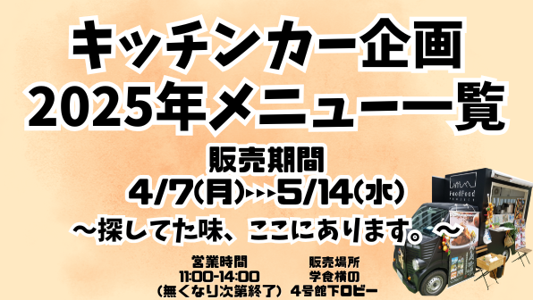
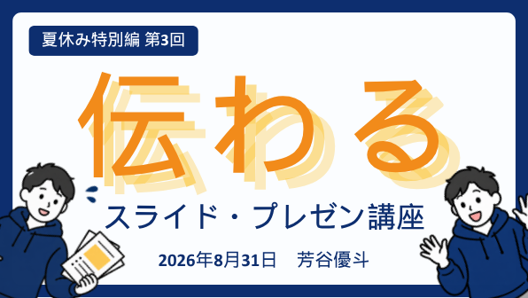

01実施済み / チームリーダーキッチンカー商品企画POSデータと5回の試作から、メニューをつくる
限られた販売機会で、商品選択とセット購入をどう増やすか
チームリーダーとしてPOSデータを確認し、5回の試作とメニュー設計を行った
データを読むことと、実際に商品を試すことを組み合わせ、販売まで進めた
{kind=link}

- 3日間の販売数
- 363食完売
- 売上
- 160,990円
- セット購入率
- 50％
商品の企画から見せ方、販売までをつなげた経験である
01 / STORIES
商品を選ぶ場面、映像を見た反応、組織の動き方
異なる課題に向き合ってきた経験を、
3つの軸からたどる
01 / CHOICE
何を届けるかと同時に、
どう選ばれるかを考える
限られた販売機会で、商品選択とセット購入をどう増やすか
チームリーダーとしてPOSデータを確認し、5回の試作とメニュー設計を行った
データを読むことと、実際に商品を試すことを組み合わせ、販売まで進めた

商品の企画から見せ方、販売までをつなげた経験である
利用者が商品を選ぶ場面そのものを見直し、快復祝いギフトBOXを提案した
4人チームのリーダーとして取り組み、企画は3チーム中1位となった
企画提案までの経験であり、実際の商品化には至っていない
通常席を残しながら、一部を20分利用席にする案を考えている
卓上POPで利用方法を示し、2週間の試行で利用状況と意見を測る想定である
現在は企画案であり、実施結果や混雑緩和の効果はまだない
02 / TEST & LEARN
比較できる形をつくり、
結果から言える範囲を考える
映像をつくるところから、評価を分析するところまで
実験設計、5種類の映像制作、フォーム作成、回答収集、R分析、レポート作成までを一貫して担当した
64名による5映像の評価、計320観測を分析した
Bのみが他4案より購入可能性で有意に低かった
一方、上位4案間には有意差が認められなかった
評価の差は分かったが、実際の購買効果までは断定できない
湯気あり広告と湯気なし広告を券売機各1台へ固定し、商品出数を比較した
有意差は確認できなかった
無作為割付ではないため、広告以外の条件による影響を切り分けられない
有意差がないことから「効果がない」とは断定しない
出荷継続要因を回帰分析で調べ、学内報告会で発表した
評価は17報告中1位となり、学内報告会から研究へ発展した
03 / WORK WITH OTHERS
役割や情報を整えて、
人が参加しやすい形を考える
参加しやすく、役割を持って動ける組織へ
運営を自分だけで抱え込まず、周囲が動ける仕組みを考えた
時間設定を見直し、次回予告、提案箱、担当制度を試行した
効果の薄い施策は中止した
後輩へ役割を移し、周囲が動ける状態を考えた
情報を並べるだけでなく、理解して試せる流れを考える
構成、台本、約90枚の資料をつくり、約2時間の講座を設計した
ストーリーと実践を組み合わせて進行した

参加人数と効果は確認後に追記
役割、課題、工夫、連携、結果は確認後に追記
{kind=link}